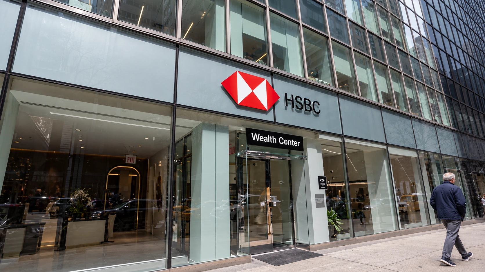

HSBC Shares Fall as Revenue Miss Overshadows a 32% Profit Increase
Wealth revenue stalled and investors marked down the shares, despite higher quarterly profit and another planned buyback of up to $1 billion.

HSBC reported a 32% increase in third-quarter pretax profit on Tuesday, but its revenue disappointed investors looking for stronger growth. The bank earned $9.6 billion before tax and generated $18.6 billion in revenue. The contrast puts the quality of the improvement at the center of the results: a large increase in profit did not mean the underlying business was expanding at the same speed.
Reuters reported that revenue fell short of analysts' $19 billion forecast and that Hong Kong-listed shares slid about 6% during trading. Wealth revenue was flat at $2.7 billion, following growth of 15% and 23% in the first two quarters. Those observations concern the results release and the reported trading session, rather than a final closing price or the performance of HSBC's U.S.-listed depositary shares.
The distinction between growth and expectations explains why an apparently strong headline can accompany a falling share price. Our guide to earnings beats and misses describes how investors compare a release with what was already anticipated. A bank can become more profitable while still delivering less revenue momentum than shareholders had priced in.
Last year's charges change the comparison
HSBC's earnings release identifies a $1.4 billion favorable movement in notable items, reflecting legal provisions booked a year earlier that did not recur. Excluding notable items and currency movements, pretax profit rose to $10 billion. The reported increase therefore combines operating progress with an easier comparison, rather than representing a 32% acceleration across every activity.
This matters when assessing how much of an earnings increase can repeat. The absence of a previous charge lifts the annual comparison once. Maintaining that benefit in a subsequent year does not produce another equivalent increase. Investors evaluating the quarter need to separate the revenue and cost trends from the accounting effect of moving past an unusually expensive period.
The bank also reported expected credit losses of $800 million, down 17%, with lower charges related to Hong Kong commercial property contributing. That is a reduction in the period's impairment expense. It does not establish that every borrower has recovered or that future credit costs must keep falling. Loan performance remains a separate part of the investment case from growth in fees or deposits.
Wealth growth faces a higher bar
HSBC's U.S. strategy offers a concrete example of the wealth business it is building. The bank opened a Wealth Center at 430 Park Avenue in June, replacing its previous location. Its July announcement described purpose-built spaces for financial planning and access to its international capabilities. Physical distribution and advisers create capacity, but they also need customer activity and recurring business to earn a return.
A flat quarterly revenue number does not reveal, on its own, whether customers stopped bringing assets, traded less or generated a different mix of fees. It does show why investors need more than an expansion narrative. Comparing balances, activity and income over several periods is more informative than treating one quarter as proof that the entire wealth strategy has succeeded or failed.
Buybacks share the stage with capital requirements
HSBC approved a $0.10 interim dividend per ordinary share and intends another buyback of up to $1 billion. Our explanation of share repurchases sets out how reducing the share count can support per-share measures. It does not create additional customer revenue, and the authorized amount is a ceiling rather than proof that the full purchase has already occurred.
In its results overview, HSBC put its common equity tier 1 ratio at 13.9% and reiterated a medium-term operating range of 14% to 14.5%. It expects the final Basel 3.1 standards to provide a benefit of roughly 40 to 50 basis points in January 2027, based on its latest modeling. That prospective regulatory effect is different from raising new equity or generating an equivalent amount of cash.
For shareholders, the next comparison will combine wealth income, credit charges and capital available for distributions. Our recent coverage of Bank of America's results provides another bank-specific earnings case. HSBC's release shows why profit growth, revenue expectations and the capacity to return capital need to be read together, with each answering a different question.
Sources and methodology
Sources checked October 27, 2026. Company statements, reported findings and forecasts are attributed in the text. Financial and operational implications are editorial analysis.